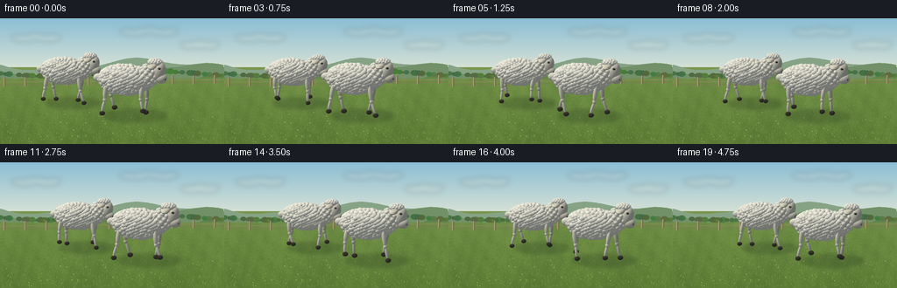
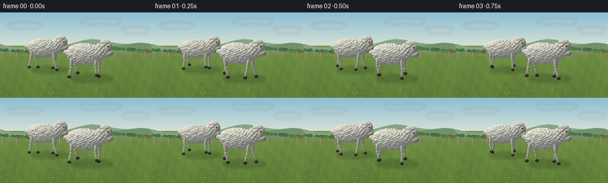

CODING AGENTS AS PIXEL WORLD MODELS
traex/GPT-6.1-Sol · instance_preservation_0016
点击播放 · 原生 RGB 像素
逐轮保存的候选
回放视频、检查图与代码变化。
每份候选均可单独播放。实际图片检查记录在下方工具轨迹中。
候选 01播放与检查图
点击播放 · 原生 RGB 像素


展开代码变化
--- 上一保存版本
+++ 本次保存版本
@@ -0,0 +1,227 @@
+from pathlib import Path
+import math
+import numpy as np
+from PIL import Image, ImageDraw, ImageFilter
+import artifact_io
+
+ROOT=Path(__file__).resolve().parent
+W,H=256,144
+SS=3
+w,h=W*SS,H*SS
+S=43*SS
+right=np.array([.958,0,-.287]); right/=np.linalg.norm(right)
+forward=np.array([-.283,-.176,-.943]); forward/=np.linalg.norm(forward)
+up=np.cross(right,forward); up/=np.linalg.norm(up)
+# Orthographic camera: a long-lens view across a sunlit meadow.
+camera=np.array([0.,0.,0.])+(-forward)*20
+sun=np.array([-.50,.78,.38]); sun/=np.linalg.norm(sun)
+xx,yy=np.meshgrid(np.arange(w)+.5,np.arange(h)+.5)
+orig=camera[None,None,:]+((xx-w/2)/S)[...,None]*right+((105*SS-yy)/S)[...,None]*up
+rng=np.random.default_rng(4519)
+
+def proj(p):
+ p=np.asarray(p)
+ return np.array([w/2+S*np.dot(p,right),105*SS-S*np.dot(p,up)])
+
+# A quiet, textured countryside background; all details generated from geometry.
+def background():
+ a=np.zeros((h,w,3),np.float32)
+ for j in range(h):
+ t=j/(h-1)
+ if j<56*SS:
+ f=min(1,j/(60*SS)); c=np.array([139,190,212])*(1-f)+np.array([218,227,214])*f
+ else:
+ f=(j-56*SS)/(88*SS); c=np.array([123,151,78])*(1-f)+np.array([80,116,52])*f
+ a[j]=c
+ im=Image.fromarray(np.uint8(a)); d=ImageDraw.Draw(im)
+ # Wispy distant clouds, not hard-edged white cutouts.
+ cl=Image.new('RGBA',(w,h)); cd=ImageDraw.Draw(cl)
+ for cx,cy,rx in [(41,22,30),(170,15,38),(228,30,21)]:
+ for k in range(9):
+ x=(cx+(k-4)*rx/6)*SS;y=(cy+2*math.sin(k*1.2))*SS
+ cd.ellipse([x-9*SS,y-3*SS,x+9*SS,y+3*SS],fill=(249,245,225,48))
+ cl=cl.filter(ImageFilter.GaussianBlur(3*SS)); im=Image.alpha_composite(im.convert('RGBA'),cl).convert('RGB');d=ImageDraw.Draw(im)
+ for base,amp,freq,color in [(53,6,.029,(134,163,133)),(60,7,.021,(114,145,105)),(68,5,.040,(98,132,75))]:
+ pts=[(x,SS*(base+amp*math.sin(x/SS*freq)+2*math.sin(x/SS*.072))) for x in range(0,w+1,3*SS)]
+ d.polygon(pts+[(w,h),(0,h)],fill=color)
+ # Sunlit pasture tonal variation.
+ arr=np.asarray(im).astype(float)
+ for j in range(69*SS,h):
+ f=(j/SS-69)/75
+ base=np.array([112,143,70])*(1-f)+np.array([91,123,53])*f
+ xs=np.arange(w)/SS
+ pat=2.8*np.sin(xs*.065+j*.011)+2*np.sin(xs*.23-j*.074)+1.7*np.sin(xs*.43+j*.037)
+ arr[j]=base+pat[:,None]*np.array([1,1,.5])
+ im=Image.fromarray(np.clip(arr,0,255).astype(np.uint8)); d=ImageDraw.Draw(im)
+ # Distant hedgerow.
+ rr=np.random.default_rng(19)
+ for k in range(115):
+ x=rr.uniform(-3,259); y=64+3*math.sin(x*.028)
+ r=rr.uniform(1.4,4.2)
+ col=(int(rr.uniform(65,95)),int(rr.uniform(100,129)),int(rr.uniform(53,76)))
+ d.ellipse([(x-r)*SS,(y-r)*SS,(x+r)*SS,(y+r*.5)*SS],fill=col)
+ # Fence is kept small and distant, behind both animals.
+ d.line([(0,73*SS),(w,70*SS)],fill=(142,134,101),width=SS)
+ d.line([(0,76*SS),(w,73*SS)],fill=(123,122,84),width=SS)
+ for x in np.arange(5,260,24):
+ y=75-x*.012
+ d.line([(x*SS,(y-7)*SS),(x*SS,(y+3)*SS)],fill=(118,109,78),width=2*SS)
+ d.line([((x-.5)*SS,(y-7)*SS),((x-.5)*SS,(y+3)*SS)],fill=(170,158,119),width=SS)
+ # Fine grass, more detailed toward camera.
+ rr=np.random.default_rng(774)
+ for _ in range(5000):
+ x=rr.uniform(0,w); y=rr.uniform(79*SS,h)
+ dep=(y/SS-72)/72
+ length=rr.uniform(.4,2.1)*SS*dep
+ col=rr.choice(4)
+ colors=[(109,140,65),(138,157,78),(80,113,49),(101,131,54)]
+ d.line([(x,y),(x+rr.uniform(-.8,.8)*SS,y-length)],fill=colors[col],width=max(1,int(.35*SS)))
+ for _ in range(34):
+ x=rr.uniform(0,w); y=rr.uniform(104*SS,h)
+ d.ellipse([x,y,x+.65*SS,y+.6*SS],fill=(209,200,123))
+ return im
+
+bg=background()
+
+class Renderer:
+ def __init__(self,im):
+ self.rgb=np.asarray(im).astype(np.float32).copy()
+ self.depth=np.full((h,w),1e9,np.float32)
+ def ell(self,c,r,color,R=None,texture=0,ao=0):
+ c=np.array(c,float);r=np.array(r,float)
+ if R is None:R=np.eye(3)
+ # Quadratic form for the exact intersection of a camera ray with an ellipsoid.
+ Q=(R/(r*r)[None,:])@R.T
+ p=proj(c)
+ ex=S*np.sqrt(np.sum((right@R*r)**2));ey=S*np.sqrt(np.sum((up@R*r)**2))
+ x0=max(0,int(p[0]-ex)-2);x1=min(w,int(p[0]+ex)+3)
+ y0=max(0,int(p[1]-ey)-2);y1=min(h,int(p[1]+ey)+3)
+ if x1<=x0 or y1<=y0:return
+ oc=orig[y0:y1,x0:x1]-c
+ qd=Q@forward;A=forward@qd
+ B=2*(oc@qd);C=np.einsum('...i,ij,...j->...',oc,Q,oc)-1
+ disc=B*B-4*A*C
+ t=(-B-np.sqrt(np.maximum(disc,0)))/(2*A)
+ mask=(disc>=0)&(t<self.depth[y0:y1,x0:x1])
+ if not np.any(mask):return
+ pos=oc+t[...,None]*forward
+ n=pos@Q;n/=np.maximum(1e-9,np.linalg.norm(n,axis=-1,keepdims=True))
+ lam=np.maximum(0,n@sun)
+ # Cool hemisphere fill and broad warm sunlight preserve creamy white fleece.
+ light=.48+.48*lam+.06*np.maximum(0,n[...,1])
+ light*=1-ao*(.6+.4*np.maximum(0,-n[...,1]))
+ rgb=np.array(color)[None,None,:]*light[...,None]
+ rgb+=np.maximum(0,1-lam)[...,None]*np.array([-3,1,5])
+ if texture:
+ world=pos+c
+ noise=np.sin(world[...,0]*161+world[...,1]*139+world[...,2]*87)*np.sin(world[...,0]*93-world[...,1]*154+world[...,2]*163)
+ rgb+=texture*noise[...,None]
+ dst=self.rgb[y0:y1,x0:x1];dst[mask]=rgb[mask]
+ self.depth[y0:y1,x0:x1][mask]=t[mask]
+ def limb(self,a,b,width,color):
+ a=np.array(a);b=np.array(b);v=b-a;length=np.linalg.norm(v);v/=length
+ q=np.cross(v,np.array([0,0,1.]));q/=np.linalg.norm(q);z=np.cross(q,v)
+ self.ell((a+b)/2,(width,length/2+width*.4,width),color,np.column_stack([q,v,z]),texture=.7)
+
+# Persistent fleece tuft geometry shared by every frame: no flicker or identity changes.
+def wool_geometry(seed):
+ rr=np.random.default_rng(seed); shapes=[]
+ N=430
+ for k in range(N):
+ y=1-2*(k+.5)/N; a=k*math.pi*(3-math.sqrt(5)); s=math.sqrt(1-y*y)
+ v=np.array([s*math.cos(a),y,s*math.sin(a)])
+ c=np.array([-.10,.98,0])+v*np.array([.69,.365,.33])
+ radius=rr.uniform(.052,.089)
+ shade=rr.uniform(-8,3)
+ shapes.append((c,(radius*rr.uniform(.9,1.23),radius*.93,radius),np.array([248,245,228])+shade))
+ return shapes
+wools=[wool_geometry(120),wool_geometry(232)]
+
+
+def sheep(render,base,scale,t,ident):
+ base=np.asarray(base)
+ def pos(p):return base+np.array(p)*scale
+ phase=2*math.pi*(t*1.05)+ident*1.4
+ bob=.015*math.cos(2*phase)
+ def ell(c,r,col,R=None,texture=0,ao=0):
+ c=np.array(c); c[1]+=bob
+ render.ell(pos(c),np.array(r)*scale,col,R,texture,ao)
+ # Four separate jointed legs. Feet plant and swing in alternating pairs.
+ for side in [-1,1]:
+ for fore in [False,True]:
+ hipx=.42 if fore else -.58; z=side*.225
+ ph=phase+(0 if fore else math.pi*.83)+(math.pi if side==-1 else 0)
+ swing=math.sin(ph)
+ footx=hipx+.16*math.cos(ph)
+ lift=.12*max(0,swing)
+ hip=[hipx,.83+bob,z];knee=[hipx+.065*math.cos(ph+.45),.43+lift*.5,z]
+ ankle=[footx,.10+lift,z]
+ legcol=(211,209,186) if side==-1 else (237,232,210)
+ render.limb(pos(hip),pos(knee),.060*scale,legcol)
+ render.limb(pos(knee),pos(ankle),.040*scale,legcol)
+ render.ell(pos(knee),np.array([.054,.066,.052])*scale,legcol)
+ # Dark, cloven hooves with two rounded toes.
+ for zz in [-.022,.022]:
+ render.ell(pos([footx+.015,.065+lift,z+zz]),np.array([.072,.06,.025])*scale,(72,66,52))
+ # Short woolly tail, and continuous shadowed fleece core.
+ ell([-.83,1.0,.01],[.15,.11,.095],(235,231,213),texture=1)
+ ell([-.1,.98,0],[.72,.38,.35],(225,224,208),texture=1)
+ for c,r,col in wools[ident]:ell(c,r,col,texture=1.8,ao=.012)
+ # The upright neck, narrower than the barrel torso.
+ ell([.55,1.11,0],[.235,.32,.24],(237,233,216),texture=1)
+ rr=np.random.default_rng(900+ident)
+ for k in range(56):
+ y=1-2*(k+.5)/56;a=k*2.39996;s=math.sqrt(1-y*y)
+ vv=np.array([s*math.cos(a),y,s*math.sin(a)])
+ c=np.array([.55,1.12,0])+vv*np.array([.22,.285,.21])
+ ell(c,[.064,.065,.064],(246,242,224),texture=1.3)
+ nod=.020*math.sin(phase+.3)
+ # Downward sloping long face, cream rather than the wool's brilliant white.
+ angle=-.27
+ R=np.array([[math.cos(angle),-math.sin(angle),0],[math.sin(angle),math.cos(angle),0],[0,0,1]])
+ ell([.84,1.22+nod,0],[.17,.265,.155],(227,223,204),R,texture=.8)
+ ell([.906,1.04+nod,0],[.155,.135,.14],(228,223,202),texture=.6)
+ # Ears spread laterally; their backs and pink interiors are distinctly visible.
+ for side in [-1,1]:
+ angle=side*.16
+ Re=np.array([[1,0,0],[0,math.cos(angle),-math.sin(angle)],[0,math.sin(angle),math.cos(angle)]])
+ ell([.72,1.39+nod,side*.25],[.115,.055,.18],(219,215,192),Re)
+ ell([.735,1.416+nod,side*.265],[.086,.014,.135],(189,151,134),Re)
+ # Wool on the poll, surrounded by permanent tight curls.
+ ell([.73,1.455+nod,0],[.20,.105,.165],(247,244,226),texture=1)
+ for k in range(30):
+ a=k*2.39996;y=(k+.5)/30
+ c=[.73+.175*math.sqrt(1-y*y)*math.cos(a),1.46+nod+.085*y,.145*math.sqrt(1-y*y)*math.sin(a)]
+ ell(c,[.044,.04,.043],(247,244,228),texture=1.5)
+ # Eye sockets, amber-dark eyes and tiny light reflections on both sides.
+ for side in [-1,1]:
+ ell([.887,1.33+nod,side*.142],[.047,.035,.020],(166,157,131))
+ ell([.898,1.335+nod,side*.157],[.027,.024,.012],(38,31,21))
+ ell([.905,1.344+nod,side*.166],[.009,.009,.004],(247,247,229))
+ # Divided nose and subtle lower lip.
+ ell([1.025,1.036+nod,0],[.022,.047,.096],(89,81,66))
+ for side in [-1,1]:ell([1.038,1.05+nod,side*.047],[.009,.013,.02],(35,33,27))
+ ell([.997,.971+nod,0],[.035,.007,.084],(140,128,105))
+
+
+def shadows(im,bases,scales):
+ layer=Image.new('RGBA',(w,h),(0,0,0,0));d=ImageDraw.Draw(layer)
+ for b,s in zip(bases,scales):
+ center=np.asarray(b)+np.array([.14,0,-.09])*s;p=proj(center)
+ d.ellipse([p[0]-S*.83*s,p[1]-S*.16*s,p[0]+S*.86*s,p[1]+S*.19*s],fill=(34,49,27,60))
+ layer=layer.filter(ImageFilter.GaussianBlur(2.1*SS))
+ return Image.alpha_composite(im.convert('RGBA'),layer).convert('RGB')
+
+frames=[]
+for i in range(20):
+ t=i/4
+ move=.65*i/19
+ bases=[[-1.45+move,0,-.70],[.66+move,0,.66]]
+ scales=[.87,1.]
+ rend=Renderer(shadows(bg,bases,scales))
+ sheep(rend,bases[0],scales[0],t,0)
+ sheep(rend,bases[1],scales[1],t,1)
+ im=Image.fromarray(np.clip(rend.rgb,0,255).astype(np.uint8)).resize((W,H),Image.Resampling.LANCZOS)
+ frames.append(np.asarray(im))
+ print('frame',i,flush=True)
+artifact_io.save(np.stack(frames),ROOT)
可观测工具轨迹
实际执行的命令与返回图片。
命令 1exit 0
/bin/bash -lc 'ls -la && cat prompt.txt && cat GENERATION_RULES.md && cat task_spec.json'
命令 2exit 0
/bin/bash -lc "cat artifact_io.py && python - <<'PY'
import PIL, numpy
print('PIL and numpy available')
PY"命令 3exit 0
/bin/bash -lc "cat > generate.py <<'PY'
from pathlib import Path
import math
import numpy as np
from PIL import Image, ImageDraw, ImageFilter
import artifact_io
ROOT=Path(__file__).resolve().parent
W,H=256,144
SS=3
w,h=W*SS,H*SS
S=43*SS
right=np.array([.958,0,-.287]); right/=np.linalg.norm(right)
forward=np.array([-.283,-.176,-.943]); forward/=np.linalg.norm(forward)
up=np.cross(right,forward); up/=np.linalg.norm(up)
# Orthographic camera: a long-lens view across a sunlit meadow.
camera=np.array([0.,0.,0.])+(-forward)*20
sun=np.array([-.50,.78,.38]); sun/=np.linalg.norm(sun)
xx,yy=np.meshgrid(np.arange(w)+.5,np.arange(h)+.5)
orig=camera[None,None,:]+((xx-w/2)/S)[...,None]*right+((105*SS-yy)/S)[...,None]*up
rng=np.random.default_rng(4519)
def proj(p):
p=np.asarray(p)
return np.array([w/2+S*np.dot(p,right),105*SS-S*np.dot(p,up)])
# A quiet, textured countryside background; all details generated from geometry.
def background():
a=np.zeros((h,w,3),np.float32)
for j in range(h):
t=j/(h-1)
if j<56*SS:
f=min(1,j/(60*SS)); c=np.array([139,190,212])*(1-f)+np.array([218,227,214])*f
else:
f=(j-56*SS)/(88*SS); c=np.array([123,151,78])*(1-f)+np.array([80,116,52])*f
a[j]=c
im=Image.fromarray(np.uint8(a)); d=ImageDraw.Draw(im)
# Wispy distant clouds, not hard-edged white cutouts.
cl=Image.new('RGBA',(w,h)); cd=ImageDraw.Draw(cl)
for cx,cy,rx in [(41,22,30),(170,15,38),(228,30,21)]:
for k in range(9):
x=(cx+(k-4)*rx/6)*SS;y=(cy+2*math.sin(k*1.2))*SS
cd.ellipse([x-9*SS,y-3*SS,x+9*SS,y+3*SS],fill=(249,245,225,48))
cl=cl.filter(ImageFilter.GaussianBlur(3*SS)); im=Image.alpha_composite(im.convert('RGBA'),cl).convert('RGB');d=ImageDraw.Draw(im)
for base,amp,freq,color in [(53,6,.029,(134,163,133)),(60,7,.021,(114,145,105)),(68,5,.040,(98,132,75))]:
pts=[(x,SS*(base+amp*math.sin(x/SS*freq)+2*math.sin(x/SS*.072))) for x in range(0,w+1,3*SS)]
d.polygon(pts+[(w,h),(0,h)],fill=color)
# Sunlit pasture tonal variation.
arr=np.asarray(im).astype(float)
for j in range(69*SS,h):
f=(j/SS-69)/75
base=np.array([112,143,70])*(1-f)+np.array([91,123,53])*f
xs=np.arange(w)/SS
pat=2.8*np.sin(xs*.065+j*.011)+2*np.sin(xs*.23-j*.074)+1.7*np.sin(xs*.43+j*.037)
arr[j]=base+pat[:,None]*np.array([1,1,.5])
im=Image.fromarray(np.clip(arr,0,255).astype(np.uint8)); d=ImageDraw.Draw(im)
# Distant hedgerow.
rr=np.random.default_rng(19)
for k in range(115):
x=rr.uniform(-3,259); y=64+3*math.sin(x*.028)
r=rr.uniform(1.4,4.2)
col=(int(rr.uniform(65,95)),int(rr.uniform(100,129)),int(rr.uniform(53,76)))
d.ellipse([(x-r)*SS,(y-r)*SS,(x+r)*SS,(y+r*.5)*SS],fill=col)
# Fence is kept small and distant, behind both animals.
d.line([(0,73*SS),(w,70*SS)],fill=(142,134,101),width=SS)
d.line([(0,76*SS),(w,73*SS)],fill=(123,122,84),width=SS)
for x in np.arange(5,260,24):
y=75-x*.012
d.line([(x*SS,(y-7)*SS),(x*SS,(y+3)*SS)],fill=(118,109,78),width=2*SS)
d.line([((x-.5)*SS,(y-7)*SS),((x-.5)*SS,(y+3)*SS)],fill=(170,158,119),width=SS)
# Fine grass, more detailed toward camera.
rr=np.random.default_rng(774)
for _ in range(5000):
x=rr.uniform(0,w); y=rr.uniform(79*SS,h)
dep=(y/SS-72)/72
length=rr.uniform(.4,2.1)*SS*dep
col=rr.choice(4)
colors=[(109,140,65),(138,157,78),(80,113,49),(101,131,54)]
d.line([(x,y),(x+rr.uniform(-.8,.8)*SS,y-length)],fill=colors[col],width=max(1,int(.35*SS)))
for _ in range(34):
x=rr.uniform(0,w); y=rr.uniform(104*SS,h)
d.ellipse([x,y,x+.65*SS,y+.6*SS],fill=(209,200,123))
return im
bg=background()
class Renderer:
def __init__(self,im):
self.rgb=np.asarray(im).astype(np.float32).copy()
self.depth=np.full((h,w),1e9,np.float32)
def ell(self,c,r,color,R=None,texture=0,ao=0):
c=np.array(c,float);r=np.array(r,float)
if R is None:R=np.eye(3)
# Quadratic form for the exact intersection of a camera ray with an ellipsoid.
Q=(R/(r*r)[None,:])@R.T
p=proj(c)
ex=S*np.sqrt(np.sum((right@R*r)**2));ey=S*np.sqrt(np.sum((up@R*r)**2))
x0=max(0,int(p[0]-ex)-2);x1=min(w,int(p[0]+ex)+3)
y0=max(0,int(p[1]-ey)-2);y1=min(h,int(p[1]+ey)+3)
if x1<=x0 or y1<=y0:return
oc=orig[y0:y1,x0:x1]-c
qd=Q@forward;A=forward@qd
B=2*(oc@qd);C=np.einsum('...i,ij,...j->...',oc,Q,oc)-1
disc=B*B-4*A*C
t=(-B-np.sqrt(np.maximum(disc,0)))/(2*A)
mask=(disc>=0)&(t<self.depth[y0:y1,x0:x1])
if not np.any(mask):return
pos=oc+t[...,None]*forward
n=pos@Q;n/=np.maximum(1e-9,np.linalg.norm(n,axis=-1,keepdims=True))
lam=np.maximum(0,n@sun)
# Cool hemisphere fill and broad warm sunlight preserve creamy white fleece.
light=.48+.48*lam+.06*np.maximum(0,n[...,1])
light*=1-ao*(.6+.4*np.maximum(0,-n[...,1]))
rgb=np.array(color)[None,None,:]*light[...,None]
rgb+=np.maximum(0,1-lam)[...,None]*np.array([-3,1,5])
if texture:
world=pos+c
noise=np.sin(world[...,0]*161+world[...,1]*139+world[...,2]*87)*np.sin(world[...,0]*93-world[...,1]*154+world[...,2]*163)
rgb+=texture*noise[...,None]
dst=self.rgb[y0:y1,x0:x1];dst[mask]=rgb[mask]
self.depth[y0:y1,x0:x1][mask]=t[mask]
def limb(self,a,b,width,color):
a=np.array(a);b=np.array(b);v=b-a;length=np.linalg.norm(v);v/=length
q=np.cross(v,np.array([0,0,1.]));q/=np.linalg.norm(q);z=np.cross(q,v)
self.ell((a+b)/2,(width,length/2+width*.4,width),color,np.column_stack([q,v,z]),texture=.7)
# Persistent fleece tuft geometry shared by every frame: no flicker or identity changes.
def wool_geometry(seed):
rr=np.random.default_rng(seed); shapes=[]
N=430
for k in range(N):
y=1-2*(k+.5)/N; a=k*math.pi*(3-math.sqrt(5)); s=math.sqrt(1-y*y)
v=np.array([s*math.cos(a),y,s*math.sin(a)])
c=np.array([-.10,.98,0])+v*np.array([.69,.365,.33])
radius=rr.uniform(.052,.089)
shade=rr.uniform(-8,3)
shapes.append((c,(radius*rr.uniform(.9,1.23),radius*.93,radius),np.array([248,245,228])+shade))
return shapes
wools=[wool_geometry(120),wool_geometry(232)]
def sheep(render,base,scale,t,ident):
base=np.asarray(base)
def pos(p):return base+np.array(p)*scale
phase=2*math.pi*(t*1.05)+ident*1.4
bob=.015*math.cos(2*phase)
def ell(c,r,col,R=None,texture=0,ao=0):
c=np.array(c); c[1]+=bob
render.ell(pos(c),np.array(r)*scale,col,R,texture,ao)
# Four separate jointed legs. Feet plant and swing in alternating pairs.
for side in [-1,1]:
for fore in [False,True]:
hipx=.42 if fore else -.58; z=side*.225
ph=phase+(0 if fore else math.pi*.83)+(math.pi if side==-1 else 0)
swing=math.sin(ph)
footx=hipx+.16*math.cos(ph)
lift=.12*max(0,swing)
hip=[hipx,.83+bob,z];knee=[hipx+.065*math.cos(ph+.45),.43+lift*.5,z]
ankle=[footx,.10+lift,z]
legcol=(211,209,186) if side==-1 else (237,232,210)
render.limb(pos(hip),pos(knee),.060*scale,legcol)
render.limb(pos(knee),pos(ankle),.040*scale,legcol)
render.ell(pos(knee),np.array([.054,.066,.052])*scale,legcol)
# Dark, cloven hooves with two rounded toes.
for zz in [-.022,.022]:
render.ell(pos([footx+.015,.065+lift,z+zz]),np.array([.072,.06,.025])*scale,(72,66,52))
# Short woolly tail, and continuous shadowed fleece core.
ell([-.83,1.0,.01],[.15,.11,.095],(235,231,213),texture=1)
ell([-.1,.98,0],[.72,.38,.35],(225,224,208),texture=1)
for c,r,col in wools[ident]:ell(c,r,col,texture=1.8,ao=.012)
# The upright neck, narrower than the barrel torso.
ell([.55,1.11,0],[.235,.32,.24],(237,233,216),texture=1)
rr=np.random.default_rng(900+ident)
for k in range(56):
y=1-2*(k+.5)/56;a=k*2.39996;s=math.sqrt(1-y*y)
vv=np.array([s*math.cos(a),y,s*math.sin(a)])
c=np.array([.55,1.12,0])+vv*np.array([.22,.285,.21])
ell(c,[.064,.065,.064],(246,242,224),texture=1.3)
nod=.020*math.sin(phase+.3)
# Downward sloping long face, cream rather than the wool's brilliant white.
angle=-.27
R=np.array([[math.cos(angle),-math.sin(angle),0],[math.sin(angle),math.cos(angle),0],[0,0,1]])
ell([.84,1.22+nod,0],[.17,.265,.155],(227,223,204),R,texture=.8)
ell([.906,1.04+nod,0],[.155,.135,.14],(228,223,202),texture=.6)
# Ears spread laterally; their backs and pink interiors are distinctly visible.
for side in [-1,1]:
angle=side*.16
Re=np.array([[1,0,0],[0,math.cos(angle),-math.sin(angle)],[0,math.sin(angle),math.cos(angle)]])
ell([.72,1.39+nod,side*.25],[.115,.055,.18],(219,215,192),Re)
ell([.735,1.416+nod,side*.265],[.086,.014,.135],(189,151,134),Re)
# Wool on the poll, surrounded by permanent tight curls.
ell([.73,1.455+nod,0],[.20,.105,.165],(247,244,226),texture=1)
for k in range(30):
a=k*2.39996;y=(k+.5)/30
c=[.73+.175*math.sqrt(1-y*y)*math.cos(a),1.46+nod+.085*y,.145*math.sqrt(1-y*y)*math.sin(a)]
ell(c,[.044,.04,.043],(247,244,228),texture=1.5)
# Eye sockets, amber-dark eyes and tiny light reflections on both sides.
for side in [-1,1]:
ell([.887,1.33+nod,side*.142],[.047,.035,.020],(166,157,131))
ell([.898,1.335+nod,side*.157],[.027,.024,.012],(38,31,21))
ell([.905,1.344+nod,side*.166],[.009,.009,.004],(247,247,229))
# Divided nose and subtle lower lip.
ell([1.025,1.036+nod,0],[.022,.047,.096],(89,81,66))
for side in [-1,1]:ell([1.038,1.05+nod,side*.047],[.009,.013,.02],(35,33,27))
ell([.997,.971+nod,0],[.035,.007,.084],(140,128,105))
def shadows(im,bases,scales):
layer=Image.new('RGBA',(w,h),(0,0,0,0));d=ImageDraw.Draw(layer)
for b,s in zip(bases,scales):
center=np.asarray(b)+np.array([.14,0,-.09])*s;p=proj(center)
d.ellipse([p[0]-S*.83*s,p[1]-S*.16*s,p[0]+S*.86*s,p[1]+S*.19*s],fill=(34,49,27,60))
layer=layer.filter(ImageFilter.GaussianBlur(2.1*SS))
return Image.alpha_composite(im.convert('RGBA'),layer).convert('RGB')
frames=[]
for i in range(20):
t=i/4
move=.65*i/19
bases=[[-1.45+move,0,-.70],[.66+move,0,.66]]
scales=[.87,1.]
rend=Renderer(shadows(bg,bases,scales))
sheep(rend,bases[0],scales[0],t,0)
sheep(rend,bases[1],scales[1],t,1)
im=Image.fromarray(np.clip(rend.rgb,0,255).astype(np.uint8)).resize((W,H),Image.Resampling.LANCZOS)
frames.append(np.asarray(im))
print('frame',i,flush=True)
artifact_io.save(np.stack(frames),ROOT)
PY
python generate.py"命令 4exit 0
/bin/bash -lc "ls -lh pixels.npz index.html inspection.png generate.py && python - <<'PY'
import numpy as np
p=np.load('pixels.npz')['pixels']
print('Saved tensor:',p.shape,p.dtype)
print('Frame files:',len(__import__('pathlib').Path('frames').glob('*.png').__iter__().__class__.__name__) if False else len(list(__import__('pathlib').Path('frames').glob('*.png'))))
PY"视觉工具实际返回图片 1

保存候选 1 份；完成命令 4 次；可验证图片返回 1 张。原始 API 响应与完整日志保留在本地。